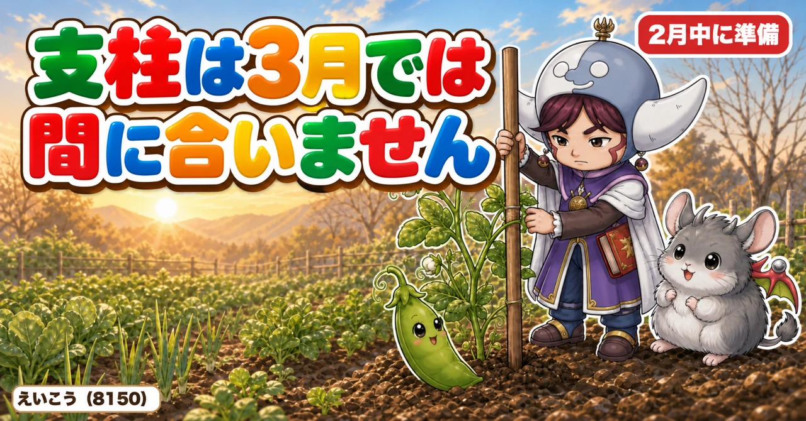
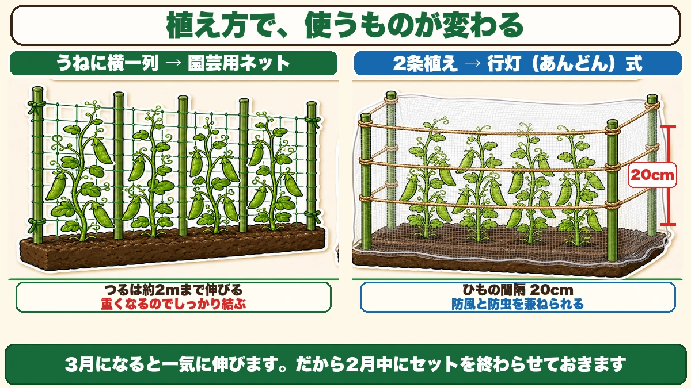

スナップエンドウとそら豆の春管理｜追肥・支柱・摘心の判断帳

どうも、8150（えいこう）です🌱 家庭菜園歴8年、理科の教員免許を持っていて、有機・無農薬で野菜を育てています。
📖 この記事の目次
この記事で分かること
- 春の豆は『スナップエンドウか、そら豆か』『冬越し株か、春に植えた苗か』を分けて管理します。
- 追肥は月だけで決めません。スナップの過肥に注意しつつ、そら豆は施肥歴と株の勢いを確認します。
- 支えは伸長前に準備。設置が遅れても、絡んだつるを引っ張らず補強する道があります。
- そら豆の摘心は、枝を育てる初期と、莢を育てる後期で目的が変わります。
- 虫、葉の変色、実の膨らみは別々に観察。肥料を足す前に、株元と土の湿りを調べます。
- 収穫日は予定として使い、最後は莢の膨らみ、色、硬さと品種の特徴を見て決めます。
豆の春管理でややこしいのは、似た言葉で違う作業を説明しているところです。「豆は肥料を控える」「そら豆には養分も必要」。どっちやねん、となりますよね。でも、作物や育ててきた条件を分けると、考える順番が見えてきます。
このページでは、冬を越した株が伸び始めるところから、支えの準備、開花、莢の肥大、収穫までを整理します。これから苗を買うみなさんも、すでに畑で豆が倒れて困っているみなさんも、必要な章から使ってください。
全部を一度に覚える必要はありません。『先端』『株元』『支え』『土』『莢』の五つを見る。それだけでも、今やる作業を選びやすくなります。春だから何か足さなきゃ、ではなく、株を見てから動く。まずはこの順番でいきましょう☺️
早見：スナップエンドウとそら豆の育て方（ひと目で分かる数字）
スナップエンドウの計画と大きさ
- 秋の種まき：10月中旬〜11月下旬という説明があります。関東で11月下旬まで、暖かい秋は少し遅らせるという考え方もあります。地域別の適期を確認する数字です。
- 冬越し時の草丈：約10cmを理想とする説明と、10〜15cm前後を目安にする説明があります。15cmでも大きいとする管理があり、上限を全国共通にはできません。
- 春から始める方法：冬越しに失敗したら、春に販売される苗から再開する選択肢があります。秋まき株と同じ収量を約束する方法ではありません。
- つるありの高さ：約2mまで伸びる説明があります。支柱だけでなく、つるが絡む面と、その面を支える結び方まで用意します。
- つるなしの高さ：約60cmとする準備例、80cm〜1m程度になるという生育例があります。『つるなし＝支えなし』とは考えません。
- 支えを準備する時期：2月中を目安に先回りする説明があります。ただし実際の判断は伸び始める前。すでに伸びた株も慎重に補強できます。
- 行灯式のひもの間隔：約20cmで4段、約15cm、収穫期には10〜15cmという複数の説明があります。株の高さと倒れやすさに合わせる数字です。
- 元肥の考え方：秋の土づくりでは入れ過ぎを避けます。前作の肥料が残る場所では、その分も含めて考えます。量の一律指定はありません。
- 追肥の時期：2月以降は追加しない方法と、2月下旬・3月中旬に行う方法があります。同じ条件の比較ではないので、回数だけを取り出して足し合わせません。
- 収穫の時期：秋まきでは翌春4〜5月の例があります。種まきからの日数を一つに固定する資料はなく、地域・品種・冬の生育で変わります。
- 収穫中の点検：3日に1回程度見る例があります。これは実践例で、すべての株の収穫間隔ではありません。膨らみの早さを見て調整します。
- 終わりの目安：5月下旬〜6月上旬の片づけ例があります。日付だけで撤去せず、下からの枯れ上がりと、新しい花が減る様子を確認します。
そら豆の計画と整理の数字
- 秋の種まき：10月下旬〜11月中旬ごろという説明があります。寒さの来方が違うので、地域と品種をそろえて予定を立てます。
- 冬越し時の草丈：10〜15cm前後、または15cm未満に抑える説明があります。冬前に大きく育てるほど有利、という野菜ではありません。
- 春の高さ：約1mに達する説明があります。莢が重くなる前から、株の外側に支えを準備します。
- 初期の摘心：本葉5枚で行う説明と、本葉6段程度で行う説明があります。『枚』と『段』を同じ単位として扱わないことが大切です。
- 摘心の時期：2月中旬〜春の伸長期が一つの目安。寒い地域では強い寒さを越えてから行う説明もあります。
- 残す枝：5〜6本、6本前後、6〜8本、6〜10本という説明があります。口頭では5〜6本を目安としつつ、実演で7本を残す例もあります。
- 後期の摘心：草丈70〜80cm前後、または莢が育つ時期の先端整理という説明があります。40cm程度で伸びが止まった株まで一律に切る話ではありません。
- 元肥と追肥：元肥を入れて蕾まで待つ方法、冬の施肥後は春の追加を控える方法、春に養分を補う方法があります。開始時の肥料の条件から確認します。
- 収穫の時期：4月中旬以降の例と、5月中旬〜下旬の例があります。これを『全地域で4月に収穫できる』とは読みません。
- 収穫までの日数：この材料では、品種別の日数を決められません。秋まきから翌春の長い栽培として計画し、実際の莢で判断します。
数字がない項目は、埋めずに確認する
- 株間：今回の材料には、両作物に適用できる確かな寸法がありません。種袋や苗の表示を先に確認し、つるあり・つるなしも区別します。
- うね幅：一列植えか二列植えかで支えの形が変わります。具体幅を勝手に決めず、株が育つ場所と、両側から点検できる通路を確保します。
- 連作の間隔：何年あければ十分かという一律の数字は、この材料では確定できません。前作と病気の履歴を記録し、同じ場所に豆を続ける計画は見直します。
- 水やりの量と回数：毎日何リットル、という指定はありません。雨、土の湿り、容器の乾き方から判断します。
数字が空いていると、なんか落ち着かないですよね。でも、別の野菜の株間や、別の地域の収穫日を持ってきて埋めると、見た目だけ整った予定になります。空欄は『手元の品種で確認する場所』です。ここを分けておく方が、畑で迷いにくくなります。
- 作物名と品種、つるのタイプを確認した
- 秋から育てた株か、春から始める株か分けた
- これまでに肥料を入れた時期をメモした
- 支えが必要になる高さを確認した
- 収穫予定と、莢を見て判断する基準を分けた
作業の手順（時期の順）
1．冬の傷みと、生きている芽を分ける
- スナップエンドウとそら豆を別々に見て、先端だけが傷んだのか、株全体が枯れたのか確認します。
- そら豆は株元も見て、残っている脇芽と、新しく伸びる芽があるか調べます。
- 完全に枯れた葉を整理し、緑の部分まで勢いで取り去らないようにします。
- 株元が風や霜柱で浮いていないか見て、必要なら周囲の土を寄せて落ち着かせます。
- 回復する芽が見当たらない株は、春苗に替えるか、別の作付けへ切り替えるか考えます。
先端が黒いと、もう全部だめに見えます。でもそら豆では、下に生きた芽が残っている場合があります。上の見た目だけで抜いてしまう前に、株元を一度のぞいてください。逆に、株元まで失われたものを、肥料で戻そうとするのは難しいです。
ここで見るのは『枯れた部分の量』だけではありません。次に伸びる場所があるかどうかです。残る芽があれば見守る余地があり、全体が失われていれば苗からやり直す選択ができます。二つを分けると、立て直しの作業がはっきりします。
スナップエンドウの春苗も、選択肢の一つです。冬越し株と比べて収穫が少なくなる説明はありますが、春から収穫を楽しむ方法として使えます。『秋に失敗したから今年は終了』と決めなくても大丈夫。ただし、春苗の植え時や適性は、買う苗の表示と地域で確認してください。
2．支えの形を、植え方から決める
- 一列のスナップエンドウなら、つるが絡める面を作る形を考えます。
- 二列の株をまとめて支えるなら、四隅の支柱にひもを回す行灯式を検討します。
- つるありかつるなしかを確認し、低い支えで足りると決めつけないようにします。
- そら豆は外に倒れる枝を受け止める枠として、株の周囲に支えを配置します。
- 設置後、支柱のぐらつきと、結び目の緩みを手で確かめます。
行灯式は、株の外側に囲いを作る支え方です。名前が急に昔の道具みたいになりますが、四角い枠を思い浮かべればOK。スナップでは伸びるつるを支え、そら豆では枝が外へ倒れるのを受け止める。似た形でも、株との関わり方が少し違います。
春の準備では約20cm間隔で4段という例があります。株が伸びた後には約15cm、収穫期には10〜15cmという説明もあります。ひもの数を守ることが目的ではなく、支えのない隙間で茎が倒れないようにするための寸法です。足りない部分を見て、段を追加します。
つるありのスナップは約2mになる説明があります。下の数段だけ作って終わりにすると、上が伸びたときに支える場所がなくなります。上部をどう支えるかまで考えておくと、後から株を動かす作業を減らせます。

3．絡む前に誘導し、絡んだ後は引っ張らない
- 伸び始めた先端が支えへ届く位置にあるか確認します。
- 支えから離れたつるは、折らない範囲で向きを整えます。
- すでに絡んだ部分は、無理にほどかず、その周囲の支えを補強します。
- 重くなった段やたるんだひもを見つけたら、茎を引き寄せ過ぎないよう慎重に直します。
- 株同士が絡んだ後の間引きは、残す株を引っ張って傷めない方法を選びます。
誘引は、伸びたい先に足場を用意する作業です。人がつるをきれいに並べ直すことを優先すると、細い部分が折れやすくなります。見た目の整列より、生きた茎を守る方を優先してください。
絡んだ株の間引きでは、不要な株を根元で切り、上部が乾くまで待つ方法があります。絡みを一気に引き抜かないための工夫です。ただし、病気が疑われる葉や株をそのまま放置する話とは分けます。健康な絡みの整理と、感染が疑われる部分の処理は同じ判断ではありません。
支えは、設置した日より後の方が負担が大きくなります。葉が増え、莢がつき、風を受ける面も広がるからです。ひもだけ直しても、支柱の根元がぐらついていればまた緩みます。下から順に『支柱、結び目、各段、上部』を見てください。
4．春の追肥を決める前に、過去の管理を確認する
- 秋の元肥、冬の追肥、前作の肥料の有無を思い出してメモします。
- スナップエンドウとそら豆を分け、それぞれの施肥計画を確認します。
- 葉色だけでなく、伸び方、土の湿り、虫、根元の状態を見ます。
- スナップはつるや葉ばかり旺盛になっていないか確認し、勢いのある株への追加を急がないようにします。
- そら豆は蕾がついた段階か、元気がない段階かも分け、採用した栽培方法の条件に戻ります。
ここは『春だから追肥』と自動で動かないのが大切です。材料にはスナップの春追肥を控える説明も、春に追肥する説明もあります。そら豆にも、追肥する体系と、追加しない体系があります。両方を全部実行したら、控える方法の意味がなくなってしまいます。
葉が薄い緑色になったとしても、養分だけが原因とは限りません。冬の傷み、根の状態、乾燥などを先に確認します。特に花や莢が育つ時期は、水の状態を調べることも大事です。肥料袋へ手を伸ばす前に、土へ目を向けましょう。
このページでは、肥料の種類や一律の量は指定しません。これまで入れた量も、製品も、土の蓄積も違うためです。別の人の回数に、自分の使っている肥料を当てはめると条件が変わります。元の管理方法の説明まで戻って考えてください。
5．そら豆の初期摘心は、目的を確認してから
- 主軸と株元の脇芽を見分け、今どの枝を育てようとしているか確認します。
- 強い寒さが残る地域では、暦だけで切らず、株と気温の状態を見ます。
- 本葉5枚という方法か、本葉6段程度という方法か、数え方を含めて確認します。
- 枝を育てるための初期摘心なら、主軸の先端を止める作業として行います。
- その後は脇芽の伸びを見て、弱い芽まで際限なく残さないようにします。
摘心は、茎のいちばん先で伸びている部分を取り除く作業です。『伸びているのに止める』ので、なんかもったいなく感じますよね。ただ、そら豆では主軸だけを高くするより、育てたい脇芽へ成長を向ける考え方があります。
気をつけたいのは、数字の見た目が似ていることです。本葉5枚と本葉6段は、5と6の差だけではありません。枚数と段数という数え方も違います。下から機械的に六つ数えて切るのではなく、どの説明に沿うかと株の状態を確認します。
すでに花や莢がある株では、初期の作業をやり直す感覚で全部切らないでください。これから枝を増やす時期か、残った莢を育てる時期か。そこが変わると、摘心の目的も変わります。
6．そら豆の枝は、育てるものを残して整理する
- 株元から出る枝を見て、太さ、伸び方、内側の混み具合を確認します。
- 育てたい枝を先に選び、細く弱い芽や、後から出る小さな芽を整理します。
- 残す本数の説明に幅があることを踏まえ、数字だけで元気な枝を切らないようにします。
- 枝の間から株元が見えるか、虫を探せるか確認します。
- 莢が育つ段階では、新しい小枝を増やし続ける管理から、残す枝と莢を育てる管理へ切り替えます。
枝の目安には5〜6本、6〜8本、6〜10本などがあります。説明と実演でも違う例があります。ここから読み取れるのは『全て残す方法ではない』という点です。何本なら必ず豊作かという計算にはできません。
小さな枝にも花があると、切りにくいです。でも、後から伸びた細い枝を残し続けると、中心が混みます。花の数だけ見て喜ぶのではなく、その枝が莢を育てられそうか、太い枝の管理を妨げていないかを見てください。
枝を増やす話と枝を減らす話は、順番でつながっています。まず育つ枝を確保し、その後は残す枝を選ぶ。『前には増やすと言っていたのに』という矛盾ではなく、株が次の段階へ進んだということです。
7．開花したら、風よけの中と土の湿りを確認する
- 花がつき始めたら、被覆の内側につるが絡んでいないか見ます。
- 葉が茂って空気が通りにくくなっていないか確認し、被覆を外す時期も考えます。
- 土が乾いているようなら、根を傷めない位置で中の湿りも調べます。
- 実際に乾燥している場合に水を補い、濡れた土へ毎日重ねて与えないようにします。
- プランターは畑より乾きが早い場合があるので、容器ごとに確認します。
土の内部を見る深さには約5cmの説明と、約10cmの説明があります。これは『必ずその深さまで掘る』という決まりではなく、表面だけでは分からない水の状態を確かめる例です。株の根を掘り返さない位置で調べます。
開花時に乾燥すると実つきが悪くなる説明があり、莢の肥大期にも水不足へ注意が必要です。花がある、葉もある、でも莢が膨らまない。そんなときに追肥だけを考えると、水の確認が抜けてしまいます。
反対に、ずっと湿っている場所へ水を追加するのも困ります。雨の後は排水を確認し、乾燥を防ぐ作業と、過湿を避ける作業をセットで考えてください。水やりの回数を守るより、今の土に合っているかが大事です。
8．そら豆の後期摘心は、莢の育ちを見て行う
- 花や莢がついた枝を確認し、初期の脇芽を増やす作業とは分けます。
- 草丈70〜80cm前後などの目安だけでなく、株全体の勢いを見ます。
- 莢を育てる段階の方法に沿って、残す茎の先端を整理します。
- 背が低く伸びが止まっている株は、同じ高さにそろえるために切らず、原因を確認します。
- 摘心後も、株元から出る弱い芽と、残した枝の先端の虫を点検します。
後期の摘心は、上へ伸び続ける部分を抑えて、すでについている莢を育てるための管理です。初期の『枝を確保する』と、後期の『莢へ向ける』。言葉は同じでも、仕事の中身が変わります。
低い株に対して、目安の数字だけを使って切り込むのは避けます。40cm程度で止まっている株は様子を見る説明もあります。背が低い原因が乾燥や根の不調なら、先端を切るだけでは解決しません。
先端にアブラムシがいる場合も、摘心で虫対策がすべて終わるとは考えません。残る葉裏や枝の付け根も見ます。切った場所だけきれいになって、別の枝で増えていたら、観察の続きが必要です。
9．虫は、少ないうちに探して取り除く
- そら豆の先端、葉裏、込み合った部分を見て、虫がいないか調べます。
- 少数なら、花や柔らかい葉を傷めないよう、手で取り除く方法を選びます。
- 払い落とした場合は、下の葉や株元に残っていないか確認します。
- 他の枝や隣の株も見て、見つけた部分だけで点検を終えないようにします。
- 次の点検でも同じ場所を見て、再び増えていないか確認します。
黒いものが固まっているとびっくりしますが、虫の量と場所を見れば作業を選べます。花ごと乱暴にこすり落とすより、少数のうちに取り除く方が株を扱いやすいです。
筆や水で落とす方法にも、再び株へ上がることを心配する説明があります。落とすことと、その場から取り除くことは同じではありません。方法を選ぶときは、落ちた後まで見てください。
自作の散布液については、この材料だけで組成や適否が確定していません。春の手順に、決まった液や放置時間として組み込みません。まず実行できるのは、観察、少数での除去、株元の整理、再点検です。
10．収穫は、下の莢から順番に調べる
- スナップエンドウは、莢がふっくらして豆の丸みが感じられるか確認します。
- 緑色でつやのある莢を探し、白っぽくなるまで放置しないようにします。
- そら豆は下の莢から、向き、膨らみ、触った硬さを組み合わせて見ます。
- 品種によって莢の向きに例外があるので、下を向いたかだけで決めません。
- 収穫のたびに上の花と小さな莢も見て、次の収穫が続くか確認します。
スナップは、絹さやのように平たい段階と、豆が膨らんだ段階で食べる部分の育ちが違います。大きければ大きいほどよい、ではありません。取り遅れると莢や豆が硬くなるので、膨らみを待ちつつ待ち過ぎないことが大切です。
莢をつけたままにし続けると、次の花や実の育ちが遅れるという説明もあります。収穫は食べるための作業ですが、株を次の実へ進める管理でもあるんですよね。
終盤に花が減り、株元から黄色く枯れ上がってきたら、収穫の終わりも考えます。ただし、最盛期の急なしおれや変色を『もう寿命かな』と片づけないようにします。生育途中の異常と、季節の終盤は分けて見てください。
失敗の見分け方（症状→原因→やること）
葉とつるは立派なのに、花や莢が少ない
- 症状：スナップエンドウの緑が濃く、つるはよく伸びるのに、期待したほど実がつきません。
- 考えられる原因：養分過多によるつるぼけが候補です。ただし、生育段階や開花時の状態を確認せず、原因を一つに決めません。
- やること：元肥、冬の追肥、前作の施肥を確認します。追加を急がず、花がまだ少ない段階なのか、咲いた後に実が育たないのか分けます。
『元気そうなのに実がない』と『株そのものが弱い』は、同じ追肥で解決するとは限りません。葉を大きくする管理と、花や莢を育てる管理は目的が違います。特にすでに勢いのあるスナップへ、不安だからもう一回、という追加は慎重に考えます。
葉色が薄い、下葉が黄色い
- 症状：葉の色が薄くなり、株が頼りなく見えます。下葉だけの場合と、全体の場合があります。
- 考えられる原因：養分不足のほか、乾燥、寒さの傷み、根張りの不調などが候補です。黄色という色だけでは区別できません。
- やること：株元の芽、先端、土の湿り、虫の有無を順に確認します。全体の勢いと、これまでの肥料の条件を見てから施肥を考えます。
下の古い葉が傷んでも、上と株元の芽が育っている場合があります。反対に、新しい芽まで止まっているなら確認する範囲が広がります。『黄色い葉を見つけた日』だけでなく、その後に新しい葉が増えるかも記録してください。
先端が黒い、冬を越して伸びない
- 症状：冬の後、先端に傷みが残り、伸び始めません。
- 考えられる原因：寒さの影響や、株元までの傷みが考えられます。そら豆では主軸が傷んでも脇芽が残る場合があります。
- やること：先端だけでなく下の芽を調べます。生きた芽があれば回復の様子を見て、全体が失われた場合は春苗などへの切り替えを考えます。
枯れた葉の枚数と、回復できるかどうかは別の問題です。残る芽が見えたら、その芽を傷めないよう周囲を整理します。『何日待てば必ず戻る』という期限は、この材料にはありません。動きがあるかどうかで見てください。
株が傾く、ひもがたるむ
- 症状：枝が外へ倒れ、スナップの上部がまとまって下がります。
- 考えられる原因：支柱のぐらつき、結び目の緩み、葉や莢の重み、支えの不足が候補です。
- やること：支柱の根元から調べ、必要な場所を補強します。絡みついた茎を持って引き上げるのではなく、支え側を慎重に直します。
ひもを張り直してもすぐ緩むなら、結び方だけが問題ではないかもしれません。支柱そのものが動いていないか確認してください。上部の重みが増す時期には、下の段が無事でも上の支えが必要になります。
そら豆の中心が、枝と葉でぎゅうぎゅう
- 症状：株元が見えず、内側の虫や細い枝を探しにくくなっています。
- 考えられる原因：出てきた脇芽をすべて残し、後から出た弱い枝まで混み合っている可能性があります。
- やること：残す枝を決めてから、細い芽と不要な枯れ葉を整理します。枝の本数だけでなく、内側を点検できる状態に戻します。
整理の目的は、株を小さくすることではありません。育てる枝を選んで、見える場所を増やすことです。枝を切る日には、葉裏や先端に虫がいないかも一緒に調べると、別々の作業に分けずに済みます。
そら豆の先に、小さな虫が集まる
- 症状：成長点や葉裏にアブラムシが集まり、枝の先が黒っぽく見えることがあります。
- 考えられる原因：柔らかい先端で増えている状態が考えられます。株の中に隠れた虫が残っている場合もあります。
- やること：少ないうちに取り除き、落ちた虫の残りと他の枝を確認します。翌回も同じ場所を見て、再発していないか調べます。
一つの先端をきれいにしただけで、株全体を終わりにしないことが大事です。中の葉、下の葉、別の枝へ視線を移します。虫がつく場所を覚えておくと、次から探す順番が作れます。
花は咲いたのに、莢が膨らまない
- 症状：花や小さな莢は見えるのに、その後の育ちが進みません。
- 考えられる原因：開花時や莢の肥大期の乾燥が候補です。冷え込み、株の不調、虫なども確認が必要です。
- やること：土の内部の湿りと排水、莢の付け根の状態を見ます。水不足なら水を補い、濡れているなら一律に追加しません。
この症状は『肥料が足りないのかな』と思いやすいです。でも土が乾いているなら、まず水の問題があります。そら豆では、残す枝が多過ぎて混み合っていないかも確認してください。一つの原因で説明しようとせず、目の前で確認できるものから調べます。
葉に白い粉のようなもの、茶色い変色が出る
- 症状：スナップの葉に白い粉状の斑点が出る、そら豆の葉が茶色く変色する、といった異常が見られます。
- 考えられる原因：うどん粉病やさび病などが候補ですが、色だけで確定診断はできません。
- やること：異常が出た場所と広がり方を確認し、疑わしい葉を整理して周囲への広がりを点検します。処理後の手や道具も、他株へ移る前に清潔にします。
葉色が薄い話と、粉や斑点が出る話は分けます。後者を肥料不足として扱うと、病気の確認が遅れます。原因が分からず広がるときは、株全体と葉裏の状態が分かる写真を残し、地域の相談先へ確認する材料にしてください。
スナップの莢が硬い、色が薄くなってきた
- 症状：莢は大きいのに硬く、緑色が薄い、白っぽいものも混じります。
- 考えられる原因：取り遅れが候補です。小さな莢が膨らむ時期を通り過ぎている可能性があります。
- やること：今ある莢を調べ、次からは緑色、つや、豆の膨らみを一緒に見ます。収穫の間隔を、株の実際の育ちに合わせます。
収穫が始まると、株の奥や葉の後ろに見落としができます。手前だけでなく、左右や下からも見てください。大きいものを探すより、食べたい膨らみになったものを探す方が、取り遅れを減らしやすくなります。
説明が分かれていること
スナップエンドウの春追肥は、するのかしないのか
- Aという説明：動画の春管理には、2月以降の追肥を控えて、つるぼけを避ける方法があります。
- Bという説明：別の動画では、2月下旬と3月中旬に追肥する方法が示されています。草丈が伸び過ぎる場合は控える条件もあります。
- どう考えればよいか：同じ土、同じ元肥、同じ製品で比べた結果ではありません。時期だけを抜き出して、二つの方法を足し合わせないことが大切です。
どちらかの説明だけを『豆の正解』にすると、反対の管理をしている株を理解できなくなります。共通して気をつけたいのは、勢いのある株へ追加し過ぎないことです。自分がどの体系で育てているか、前作の肥料も含めて確認します。
そら豆も、追肥なしでよいのか
- Aという説明：動画には、春のそら豆で追加の追肥をしない管理があります。冬にすでに肥料を入れた花後管理では、水不足も確認する説明があります。
- Bという説明：別の管理では、元気な株は蕾まで待ち、葉色が薄く元気がない株にはそれ以前に補う方法があります。そら豆は養分を必要とするという説明もあります。
- どう考えればよいか：そら豆をスナップと一括りにせず、元肥と冬の施肥歴、蕾の有無、株の状態をそろえて考えます。
根粒菌の働きがあることと、栽培中に肥料が一切いらないことは同じ意味ではありません。そら豆でも追加しない方法があるため、『種類だけ分ければ解決』とも言い切れません。作物と施肥歴の両方を分ける必要があります。
支柱は2月まで、3月では遅いのか
- Aという説明：春の伸長に備え、できれば2月中に支えを準備する動画があります。
- Bという説明：その後の時期でも、たるみを直し、段を追加し、支えを補強する管理があります。
- どう考えればよいか：2月は準備の目安です。3月になったら対応できない、という境界線ではありません。
遅れたときは、株を小さい頃の状態へ戻そうとせず、今の絡みを守って支えを加えます。準備の目安を知ることは役立ちますが、過ぎたら諦めるための日付にはしないでください。
ひもの間隔は、10cm、15cm、20cmのどれか
- Aという説明：伸び始める前の準備では、約20cm間隔で4段という例があります。
- Bという説明：別の準備では約15cm、収穫期の管理では10〜15cm間隔という説明があります。
- どう考えればよいか：株の高さ、つるの絡み、枝が倒れる隙間を見ます。数字の平均を出して一つに決める必要はありません。
そら豆では株同士が支えるため、少ない段でも耐えられるという実演もあります。その状態を、広い間隔の植え方や重い株へそのまま移すことはできません。枠の形だけでなく、中の株の位置も見て調整します。
そら豆の摘心は、本葉5枚か6段か
- Aという説明：動画の実演には、本葉5枚で先端を止め、寒い地域では厳しい寒さを越えてから行う方法があります。
- Bという説明：主軸に本葉6段程度ができた時期を目安にする説明があります。
- どう考えればよいか：5〜6と丸めず、枚と段を区別します。切る枝、地域、生育時期も含めて方法を確認します。
冬前に大きくなり過ぎた苗を切る話もありますが、それを春の作業へ無条件に移しません。同じ摘心という言葉でも、冬越しのサイズ調整、春の枝づくり、莢の肥大期では目的が違います。
枝の本数は、何本が正解なのか
- Aという説明：5〜6本や6本前後に整理する動画があります。
- Bという説明：6〜8本、6〜10本の目安もあり、5〜6本と言いながら実演では7本を残す例もあります。
- どう考えればよいか：数字を厳密な合格ラインにはせず、弱い枝を整理して残す枝を育てるという作業として考えます。
枝数と収量が同じ割合で増えるという試験結果は、この材料にはありません。多いほど得、とは言えないんですよね。太い枝が育ち、内側を点検でき、莢を育てる場所があるかを見ます。
アブラムシは、落とすだけで済むのか
- Aという説明：筆で払い、水で流し、その後も繰り返し点検する方法があります。
- Bという説明：落ちた虫が再び上がることを心配し、取り除くことを重視する説明があります。
- どう考えればよいか：落とせた数だけで成功を決めず、残った虫と再発を確認します。花や葉を傷めないことも必要です。
散布液についても、動画の放置時間には約10分、10〜20分、30〜60分という違いがあります。組成や適用条件が確定していないため、短い方なら大丈夫、という選び方はしません。このページでは散布液の作り方や使用時間を勧める手順にはしません。
そら豆の収穫は、4月か5月か
- Aという説明：4月中旬以降に始まる生育例があります。
- Bという説明：5月中旬〜下旬を収穫時期とする例もあります。
- どう考えればよいか：地域、品種、冬越しの状態が違います。月は点検を始める目安とし、莢の育ちで判断します。
同じ株でも、下の莢と上の莢が同時にそろうとは限りません。収穫予定日が来たから一斉に取るのではなく、順に確認します。向きだけでなく膨らみと硬さを見ることが、品種による例外にも対応する助けになります。
よくある質問
プランターでも育てられますか
プランターでの春管理を扱う説明があります。特に開花期の水切れに注意し、土の湿りを確認します。
つるあり・つるなしで必要な支えの高さも変わります。容器の寸法や株数は、この材料だけで決めず、育てる品種の表示で確認してください。
つるなしなら、支柱はいりませんか
低く育つタイプでも、80cm〜1m程度になる説明や、支えを追加する実演があります。
『つるなし』は何も支えなくてよいという意味ではありません。枝の傾きやひもの高さを見て、必要な支えを用意します。
2月中に支えを用意できませんでした。もう無理ですか
対応する余地はあります。すでに伸びた株の補強や張り直しも行われています。
絡んだつるを無理にほどかず、支柱の安定と足りない段を確認してください。作業を早める目安と、対応できなくなる期限は別です。
豆は根粒菌がいるので、追肥は不要ですか
根粒菌の働きだけで、すべての栽培の追肥を決めることはできません。
スナップには春追肥を控える説明があり、そら豆には養分を補う説明もあります。元肥や冬の追肥の条件を確認し、作物ごとに考えます。
葉が黄色いので、すぐ肥料を足してよいですか
まず土の乾湿、寒さの傷み、根元、虫を確認してください。黄色い葉だけでは肥料不足と決められません。
下の古い葉だけか、新しい葉まで弱いのかも見ます。色に加えて、芽の動きと株全体の勢いを比べます。
そら豆の芽を全部残せば、たくさん取れますか
枝を増やす初期管理の後には、弱い枝を整理する管理があります。
全部残すと中心が混み、莢を育てる養分も分かれます。本数だけを増やさず、育てる枝を選び、内側を点検できる状態にします。
スナップエンドウにも、そら豆と同じ摘心をしますか
この材料の、本葉5枚・6段や草丈70〜80cmでの摘心は、そら豆の説明です。
豆という共通点だけでスナップへ移しません。スナップの春管理は、誘引、間引き、下葉の整理、収穫の確認として分けて考えます。
防風の囲いがあれば、虫も入れませんか
風を弱めるために周囲を囲う形と、虫の侵入を防ぐ被覆は同じではありません。
隙間のある囲いを、虫が入らない仕組みとして扱わないでください。被覆がある株でも、内側を開いて先端や葉裏を点検します。
アブラムシは一回取れば終わりですか
一度で全部取り除けるとは限りません。見えにくい場所に残ったり、再び増えたりする可能性があります。
虫がいた場所を次も確認します。被害が少ない段階の除去と、繰り返しの点検を組み合わせてください。
冬に先端が枯れたそら豆は、抜いた方がよいですか
株元に生きた脇芽が残っているなら、回復の様子を見る余地があります。
先端だけの傷みと、株元まで失われた状態を分けます。全体が枯れた場合は、春苗などからの立て直しを考えます。
冬越しに失敗したスナップは、春苗で再開できますか
春に販売される苗から始める方法があります。秋から育てた株と比べて収量が落ちる説明はありますが、収穫を楽しむ選択肢です。
手に入る苗の品種と地域の植え時を確認します。秋まきと同じ予定表を、そのまま春苗へ当てはめないようにします。
毎日水を与えた方が、莢が大きくなりますか
水切れは避けたいですが、回数を増やせばよいわけではありません。
雨や土の湿りを確認し、乾いているときに補います。開花期と肥大期は乾燥を見落とさず、同時に過湿と排水にも気を配ります。
そら豆の莢が下を向いたら、全部収穫できますか
莢の向きは目安の一つですが、品種による例外があります。
下の莢から、膨らみと触った硬さも合わせて確認してください。同じ株の上と下で育ちが違うので、一斉収穫とは限りません。
スナップは、平たい莢のうちに取りますか
スナップらしい食べ頃をねらうなら、中の豆が育ち、莢が丸みを帯びたところを確認します。
平たい絹さやの段階と区別しつつ、硬くなるまで待たないことが大事です。緑色とつやも一緒に見ます。
春の葉の異常に、自作の液をかけてもよいですか
今回の材料には自作液の紹介もありますが、資材の組成、適用条件、葉への影響を確定できません。
決まった濃度や放置時間として使う手順にはしません。まず症状の確認、疑わしい葉の整理、通気と水の状態の点検から進めます。
春管理で、最初に一つだけやるなら何ですか
まず株と支えの状態を一周確認します。株が倒れそうなら補強を優先し、虫が増えているなら除去を急ぎます。
まだ問題がなく伸び始める前なら、支えの準備が進めやすいです。全員同じ作業より、今困っていることを先に選びます。
学ぶ：春の豆のしくみ🔬
根粒菌は、根の近くで働く相手
豆の根には、根粒菌と関わる小さなこぶができます。根粒菌は空気中の窒素を、植物が利用できる形へ変える働きを持ちます。これが窒素固定です。言葉だけ聞くと難しいですが、『空気にある材料を、植物が使える形へ変える』と考えれば入口になります。
この働きがあるため、豆では窒素を足し過ぎない管理が大切になります。ただし、『空気から窒素を得られる』と『土の養分や栽培中の管理がいらない』は別です。そら豆のように、莢と豆を育てるための養分を補う説明もあります。
窒素は葉や茎を育てるための材料でもあります。花や莢を収穫したい栽培で、葉とつるばかりが旺盛になると、見た目の元気さと目的がずれます。スナップのつるぼけは、ここを考えるための言葉です。
人が肥料を加えたら共生が完全に不要になる、とまでは言い切りません。この材料で分かるのは、根粒菌の働きを考えながらも、作物と施肥体系で管理が変わることです。理科の言葉を知ると便利ですが、言葉一つで世話を全部決めないようにしましょう。
観察するときも、働きを確かめようとして栽培中の根を掘り出す必要はありません。収穫を目指す株は、そのまま育てます。土の中に相手がいる、と分かるだけでも、肥料を次々足す前に立ち止まる理由になります。
摘心は、伸びる先を選び直す作業
茎の先端には、新しい葉や茎を作る部分があります。そこを止めると、主軸だけを上へ伸ばす状態から、脇芽が伸びる状態へ変わることがあります。そら豆の初期摘心は、この変化を利用する作業です。
そら豆の花や莢は、茎に葉がつく位置の近くにできます。育つ枝を確保すれば、花や莢をつける場所も作れます。ここだけを聞くと『枝は多いほどええやん』となりそうですが、その枝を育てるための養分も必要です。
後から出た弱い枝まで増え続けると、全ての枝を同じように育てるのは難しくなります。そこで、枝を育てる段階の後に整理が入ります。作る場所を増やすことと、できた莢を大きくすることは、順番を考える必要があるんですよね。
後期に先端を止める作業は、伸び続ける部分を抑えて、残っている莢を育てる管理です。初期と後期を『先を切る』だけで覚えると、なぜ切るのかが抜けます。切る前に『いま枝を育てたいのか、莢を育てたいのか』と考えてください。
枝を選ぶときも、莢の数を単純に足し算しません。葉の状態、水の状態、株の勢いが違えば、育てられる莢も変わります。摘心をしたら必ず増収するという割合は、この材料にはありません。作業の意味を知り、その後の株を見るところまでが一組です。
支えは、上の重みを地面へ受け渡す
春になると茎が伸びるだけでなく、葉が増え、花が咲き、莢がつきます。支えにかかる負担も、株が小さい頃とは変わります。支柱の高さだけで準備を終えず、結び目や下の安定も必要になるのはこのためです。
スナップのつるは支えに絡みます。すでに絡んだつるを動かすと、細い部分へ力が集中しやすくなります。だから、株を無理に引き戻すより、支えを追加したり直したりする方を考えます。
そら豆は、枝が外へ傾くのを周囲の枠で受け止めます。四隅がしっかりしていても、途中のひもが大きくたるむと枝が倒れます。逆に、ひもだけしっかりしていても支柱が動けば枠全体が崩れます。支えは一つの部品ではなく、つながった仕組みです。
風よけにも別の役割があります。風を弱める囲いと、虫の侵入を防ぐ被覆は、目的が違います。春の伸長期にはつるの絡みや空気の通り方も変わるので、冬の状態をそのまま残すだけでは合わなくなることがあります。
葉、花、莢と水は、つながっている
花が咲いた後は、莢と中の豆が育ちます。ここで土が乾き過ぎると、花や莢の生育が進みにくくなる説明があります。『花は見えるのに実が育たない』ときに、土の水を確認する理由です。
土の表面が乾いていても、中は湿っている場合があります。反対に、少し水をかけて表面だけ濡れた状態では、内部の様子が分からないこともあります。表面の色だけで決めず、根を傷めない位置で内部を確認する方法が役立ちます。
ただ、乾燥を防ぐことと、いつも濡らしておくことは同じではありません。根の状態も守る必要があるので、雨の後は水の逃げ道を見ます。開花期だから水を増やす、ではなく、開花期だから乾きも過湿も見落とさない。こう覚えると管理がつながります。
プランターと畑でも条件が違います。容器の中は土の量が限られ、乾き方を自分で確認する必要があります。畑に雨が降った日の感覚を、そのまま別の場所の容器へ当てはめず、一つずつ見てください。
収穫は、株の次の動きにも関わる
莢を育てるには、株が作った養分が使われます。大きな莢をつけたままにすると、その莢をさらに育てる状態が続きます。スナップで取り遅れを避ける管理は、食べ頃を逃さないことと、次の花や実へつなぐことの両方に関わります。
だから、収穫した量だけで株を判断しません。次の花があるか、小さな莢があるか、葉が元気か。これも見ると、収穫が続く段階か、終わりへ向かう段階かを考えやすくなります。
そら豆では、下の莢が育っていても上はまだ小さいことがあります。株は一枚の予定表どおりに一斉に進むわけではありません。予定日は目安に置き、実物の変化を読む方が合っています。
理科のしくみを知る楽しさは、暗記する言葉が増えることだけではありません。『この作業は、株のどこを助けているのかな』と見る場所が増えることです。みなさんの豆で、先端、株元、莢を順に見てみてください。作業の意味が実物とつながると、ちょっと面白くなります🔬
まとめ
春の豆は、種類と段階を分ければ管理の順番が見えてきます。スナップエンドウのつるを支える作業、そら豆の枝を選ぶ作業、莢を育てるために水を見る作業。それぞれの目的を確認してから手を動かします。
- 肥料：作物、元肥、冬の追肥、株の勢いを確認。葉色だけで追加しません。
- 支え：伸びる前に準備し、伸びた後も重みと緩みを点検。絡んだつるは引っ張りません。
- そら豆の摘心：枝を育てる初期と、莢を育てる後期を区別。枚数と段数を混ぜません。
- 枝の整理：出た芽を全て残さず、育てる枝と弱い芽を分けます。
- 虫：先端と葉裏を調べ、少ないうちに取り除きます。一回きりで終えず再点検します。
- 水：開花期と莢の肥大期に乾燥を見落とさず、同時に排水も確認します。
- 収穫：月より実物。スナップは膨らみ、緑色、つやを見て、そら豆は向きに硬さと品種の特徴を合わせます。
畑へ行ったら、まず株を一周してください。
- 先端に虫や傷みはないか
- 株元に生きた芽、弱い枝、枯れ葉はないか
- 支柱とひもは、今の重みに耐えられそうか
- 土は乾き過ぎ、濡れ過ぎになっていないか
- 食べ頃の莢と、次に育つ花や莢はあるか
この確認から、今日は補強、今日は枝の整理、今日は収穫と選べます。全部の作業を一日で済ませなくても大丈夫です。数字が違う説明に出会ったら、作物、地域、生育段階、これまでの管理が同じかを見直してください。
まずは『何か足す』より『いまどうなっているかを見る』から。豆の春は、そこから進めると世話の理由が分かりやすくなるかなと思います
最後までお付き合いいただき、ありがとうございます。育ち始めた豆を見ながら、今必要な一つを選んでみてください。
支柱150cm
スナップエンドウのつるは約2mまで伸びます。60cmの支柱では足りません。そして3月になると一気に伸びるので、2月中に立ててください。つるが伸びきってから立てると、絡まったつるをほどく作業になります。
![[商品価格に関しましては、リンクが作成された時点と現時点で情報が変更されている場合がございます。]](https://hbb.afl.rakuten.co.jp/hgb/56d221a0.da732c49.56d221a1.b57a6709/?me_id=1230952&item_id=10017113&pc=https%3A%2F%2Fthumbnail.image.rakuten.co.jp%2F%400_mall%2Fnou-nou%2Fcabinet%2F5010356000109-01.jpg%3F_ex%3D240x240&s=240x240&t=picttext "[商品価格に関しましては、リンクが作成された時点と現時点で情報が変更されている場合がございます。]")

麻ひも
行灯式に組むときに使います。四隅に支柱を4本立てて、麻ひもを20cm間隔で4段まわす。この4段が、つるの足場になります。天然素材なので、片づけのときそのまま土に還せます。
![[商品価格に関しましては、リンクが作成された時点と現時点で情報が変更されている場合がございます。]](https://hbb.afl.rakuten.co.jp/hgb/56bc2b48.a5f55627.56bc2b49.c4ff0d7c/?me_id=1372205&item_id=10005292&pc=https%3A%2F%2Fthumbnail.image.rakuten.co.jp%2F%400_mall%2Faudiofuntech%2Fcabinet%2Fproducts%2Fetc%2Fetc06%2F7052-1.jpg%3F_ex%3D240x240&s=240x240&t=picttext "[商品価格に関しましては、リンクが作成された時点と現時点で情報が変更されている場合がございます。]")
防虫ネット
行灯の外側に巻いて風よけにします。2月3月はまだ風が強く、伸びはじめたつるが揺すられると根元が傷みます。目が粗いので完全には防げませんが、それでいい。完全に囲むと今度は蒸れます。そら豆のアブラムシ対策にもなります。
![[商品価格に関しましては、リンクが作成された時点と現時点で情報が変更されている場合がございます。]](https://hbb.afl.rakuten.co.jp/hgb/56bc205d.0066fedc.56bc205e.af56d163/?me_id=1260467&item_id=10000299&pc=https%3A%2F%2Fthumbnail.image.rakuten.co.jp%2F%400_mall%2Fmarsol-morishita%2Fcabinet%2Fshouhinn%2Fbouchuu%2Fimgrc0090950099.jpg%3F_ex%3D240x240&s=240x240&t=picttext "[商品価格に関しましては、リンクが作成された時点と現時点で情報が変更されている場合がございます。]")
スナップエンドウのタネ（つるなし）
冬越しに失敗した年の立て直し用です。春に苗を買う手もありますが、つるなしなら支柱4本で済みます。畑で冬を越した株より収量は落ちますが、十分に楽しめる量は穫れます。
![[商品価格に関しましては、リンクが作成された時点と現時点で情報が変更されている場合がございます。]](https://hbb.afl.rakuten.co.jp/hgb/552615f0.9cc2855e.552615f1.776f7de9/?me_id=1251188&item_id=10000610&pc=https%3A%2F%2Fthumbnail.image.rakuten.co.jp%2F%400_mall%2Fyonezawa%2Fcabinet%2Ftane01%2F10mame%2Fhorunsnack.jpg%3F_ex%3D240x240&s=240x240&t=picttext "[商品価格に関しましては、リンクが作成された時点と現時点で情報が変更されている場合がございます。]")